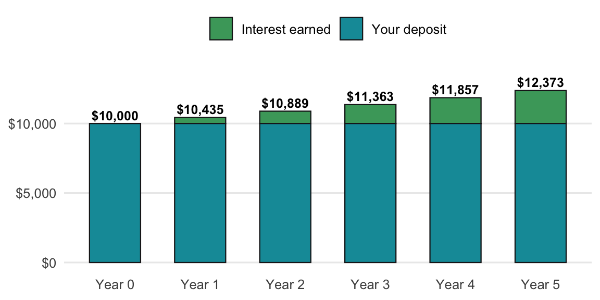
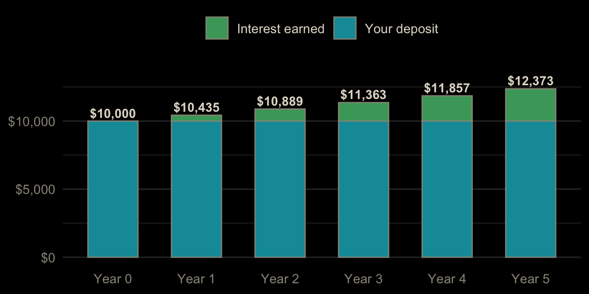
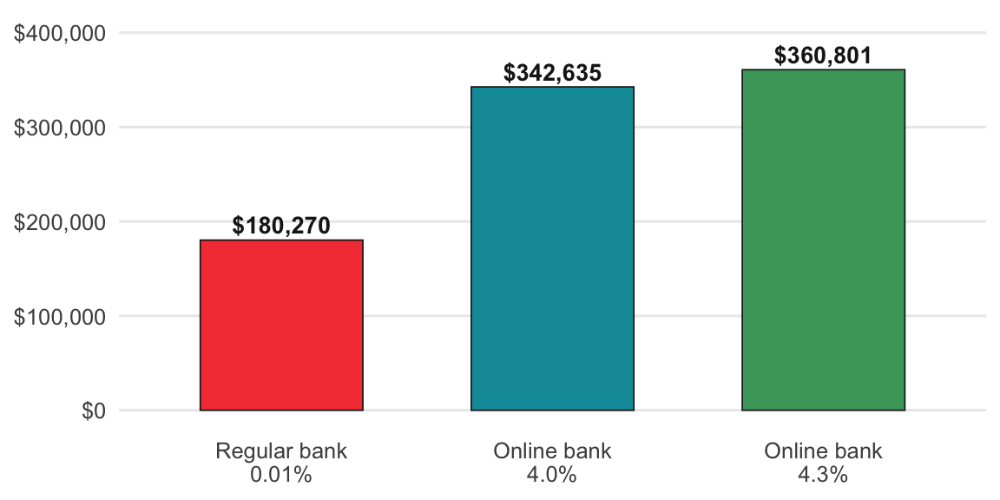
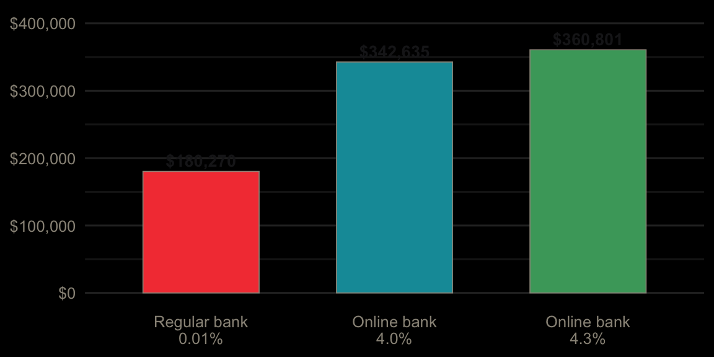

Each topic starts with a real scenario and a bar model, then three levels of exercises. Level 1 (Guided) fills in the blanks of a finished function. Level 2 (Practice) applies it to new numbers. Level 3 (Challenge) asks a new question with little scaffolding. The R and Python exercises run in your browser: click Run Code to try, Submit Answer to check, and use the hint or solution if you get stuck. Excel exercises have a solution you can reveal.
APY is the total return for a year with compounding already included. To grow a balance, multiply by (1 + APY) once for each year you hold the money.
Formula: Ending Balance = Starting Balance × (1 + APY)^years
(The daily math belongs to the APR: APY = (1 + APR ÷ 365)^365 − 1.)
Example: $10,000 at 4.35% APY grows to $10,000 × 1.0435 = $10,435 after one year ($435 in interest) and to $12,373 after five years.


How to read this result: the green layer is money the bank paid you. On $10,000 the gap between online banks is about $20 a year, but the gap between any of them and a traditional bank is over $400.
Fill in the blanks to finish hysa_balance(), then find what $10,000 grows to after one year at 4.35% APY.
Put the deposit in A2 (10000), the APY in B2 (0.0435), and years in C2 (1). Find the balance in D2.
=A2 * (1 + B2)^C2This returns $10,435.
#| exercise: balance_1_py
def hysa_balance(principal, annual_apy, years=1):
return principal * (1 + ______) ** ______
hysa_balance(10000, 0.0435)The APY already includes compounding, so grow by (1 + annual_apy) once per year.
Solution.
def hysa_balance(principal, annual_apy, years=1):
return principal * (1 + annual_apy) ** years
hysa_balance(10000, 0.0435)#| exercise: balance_1_py
#| check: true
if result is not None and abs(result - 10435) < 0.01:
feedback = {"correct": True, "message": "Right: $10,435, so $435 of interest."}
else:
feedback = {"correct": False, "message": "Not quite. Use the APY and the years."}
feedback#| exercise: balance_1_r
hysa_balance <- function(principal, annual_apy, years = 1) {
principal * (1 + ______)^______
}
hysa_balance(10000, 0.0435)The APY already includes compounding, so grow by (1 + annual_apy) once per year.
Solution.
hysa_balance <- function(principal, annual_apy, years = 1) {
principal * (1 + annual_apy)^years
}
hysa_balance(10000, 0.0435)#| exercise: balance_1_r
#| check: true
if (isTRUE(abs(as.numeric(.result) - 10435) < 0.01)) {
list(correct = TRUE, message = "Right: $10,435, so $435 of interest.")
} else {
list(correct = FALSE, message = "Not quite. Use the APY and the years.")
}Leave the same $10,000 alone for 5 years. What is the balance?
Change C2 to 5.
The same formula returns $12,372.64.
#| exercise: balance_2_py
#| setup: true
def hysa_balance(principal, annual_apy, years=1):
return principal * (1 + annual_apy) ** years#| exercise: balance_2_py
hysa_balance(______)Pass the deposit, the APY, and years=5.
Solution.
hysa_balance(10000, 0.0435, years=5)#| exercise: balance_2_py
#| check: true
if result is not None and abs(result - 12372.636878) < 0.01:
feedback = {"correct": True, "message": "Right: about $12,373, with no work at all."}
else:
feedback = {"correct": False, "message": "Not quite. Set years to 5."}
feedback#| exercise: balance_2_r
#| setup: true
hysa_balance <- function(principal, annual_apy, years = 1) {
principal * (1 + annual_apy)^years
}#| exercise: balance_2_r
hysa_balance(______)Pass the deposit, the APY, and years = 5.
Solution.
hysa_balance(10000, 0.0435, years = 5)#| exercise: balance_2_r
#| check: true
if (isTRUE(abs(as.numeric(.result) - 12372.636878) < 0.01)) {
list(correct = TRUE, message = "Right: about $12,373, with no work at all.")
} else {
list(correct = FALSE, message = "Not quite. Set years to 5.")
}Compare one year on $10,000 at four banks: Regular bank 0.01%, Ally 4.20%, Discover 4.35%, and Amex 4.40%. How much more interest does the best bank pay than the worst?
Put the banks in A2:A5 and APYs in B2:B5. Find each year’s interest in C, then the gap.
In C2, filled down: =10000*B2. Then:
=MAX(C2:C5) - MIN(C2:C5)This returns $439 ($440 vs. $1).
#| exercise: balance_3_py
#| setup: true
def hysa_balance(principal, annual_apy, years=1):
return principal * (1 + annual_apy) ** years
import pandas as pd
banks = pd.DataFrame({
"bank": ["Regular bank", "Ally", "Discover", "Amex"],
"apy": [0.0001, 0.042, 0.0435, 0.044]
})#| exercise: balance_3_py
# add a one-year interest column, then best minus worstbanks["interest"] = hysa_balance(10000, banks["apy"]) - 10000, then .max() - .min() on that column.
Solution.
banks["interest"] = hysa_balance(10000, banks["apy"]) - 10000
banks["interest"].max() - banks["interest"].min()#| exercise: balance_3_py
#| check: true
if result is not None and abs(result - 439) < 0.01:
feedback = {"correct": True, "message": "Right: $439 a year for the same money in a different bank."}
else:
feedback = {"correct": False, "message": "Not quite. Interest is the balance minus the $10,000 deposit."}
feedback#| exercise: balance_3_r
#| setup: true
library(dplyr)
hysa_balance <- function(principal, annual_apy, years = 1) {
principal * (1 + annual_apy)^years
}
banks <- data.frame(
bank = c("Regular bank", "Ally", "Discover", "Amex"),
apy = c(0.0001, 0.042, 0.0435, 0.044)
)#| exercise: balance_3_r
# add a one-year interest column, then best minus worstmutate(interest = hysa_balance(10000, apy) - 10000), then summarise(gap = max(interest) - min(interest)) and pull(gap).
Solution.
banks |>
mutate(interest = hysa_balance(10000, apy) - 10000) |>
summarise(gap = max(interest) - min(interest)) |>
pull(gap)#| exercise: balance_3_r
#| check: true
if (isTRUE(abs(as.numeric(.result) - 439) < 0.01)) {
list(correct = TRUE, message = "Right: $439 a year for the same money in a different bank.")
} else {
list(correct = FALSE, message = "Not quite. Interest is the balance minus the $10,000 deposit.")
}The book says a 0.3% difference looks like noise at first but adds up over 30 years of regular deposits. To check, we need the growth of a monthly deposit, using the monthly rate that matches the APY.
Formula: Future Value = Deposit × ((1 + i)^(12 × years) − 1) ÷ i, where i = (1 + APY)^(1/12) − 1
Example: $500 a month for 30 years grows to about $342,635 at 4.0% APY and $360,801 at 4.3% APY, a gap of about $18,166.


How to read this result: the gap is small for the first few years and grows with time. It is worth picking a good rate once, but not worth switching banks every month to chase 0.05%.
Fill in the blanks to finish hysa_deposits_fv(), then find what $500 a month grows to in 30 years at 4.0% APY.
Put the deposit in A2 (500), the APY in B2 (0.04), and years in C2 (30). Find the balance in D2.
=FV((1+B2)^(1/12)-1, 12*C2, -A2)This returns $342,635.28.
#| exercise: gap_1_py
def hysa_deposits_fv(monthly_deposit, annual_apy, years):
i = (1 + annual_apy) ** (1 / ______) - 1
return monthly_deposit * ((1 + i) ** (______ * years) - 1) / i
hysa_deposits_fv(500, 0.04, 30)Turn the APY into a monthly rate with the 12th root, then compound once per month.
Solution.
def hysa_deposits_fv(monthly_deposit, annual_apy, years):
i = (1 + annual_apy) ** (1 / 12) - 1
return monthly_deposit * ((1 + i) ** (12 * years) - 1) / i
hysa_deposits_fv(500, 0.04, 30)#| exercise: gap_1_py
#| check: true
if result is not None and abs(result - 342635.2825) < 0.01:
feedback = {"correct": True, "message": "Right: about $342,635 from $180,000 deposited."}
else:
feedback = {"correct": False, "message": "Not quite. Both blanks are 12."}
feedback#| exercise: gap_1_r
hysa_deposits_fv <- function(monthly_deposit, annual_apy, years) {
i <- (1 + annual_apy)^(1 / ______) - 1
monthly_deposit * ((1 + i)^(______ * years) - 1) / i
}
hysa_deposits_fv(500, 0.04, 30)Turn the APY into a monthly rate with the 12th root, then compound once per month.
Solution.
hysa_deposits_fv <- function(monthly_deposit, annual_apy, years) {
i <- (1 + annual_apy)^(1 / 12) - 1
monthly_deposit * ((1 + i)^(12 * years) - 1) / i
}
hysa_deposits_fv(500, 0.04, 30)#| exercise: gap_1_r
#| check: true
if (isTRUE(abs(as.numeric(.result) - 342635.2825) < 0.01)) {
list(correct = TRUE, message = "Right: about $342,635 from $180,000 deposited.")
} else {
list(correct = FALSE, message = "Not quite. Both blanks are 12.")
}Another bank pays 4.3% instead of 4.0%. Over the same 30 years of $500 deposits, how much bigger is the balance?
Add the 4.3% row and find the gap.
=FV(1.043^(1/12)-1, 360, -500) - FV(1.04^(1/12)-1, 360, -500)This returns $18,165.86.
#| exercise: gap_2_py
#| setup: true
def hysa_deposits_fv(monthly_deposit, annual_apy, years):
i = (1 + annual_apy) ** (1 / 12) - 1
return monthly_deposit * ((1 + i) ** (12 * years) - 1) / i#| exercise: gap_2_py
hysa_deposits_fv(______) - hysa_deposits_fv(500, 0.04, 30)Same deposit and years, APY 0.043.
Solution.
hysa_deposits_fv(500, 0.043, 30) - hysa_deposits_fv(500, 0.04, 30)#| exercise: gap_2_py
#| check: true
if result is not None and abs(result - 18165.858) < 0.01:
feedback = {"correct": True, "message": "Right: about $18,166 from a 0.3% difference."}
else:
feedback = {"correct": False, "message": "Not quite. Subtract the 4.0% balance from the 4.3% balance."}
feedback#| exercise: gap_2_r
#| setup: true
hysa_deposits_fv <- function(monthly_deposit, annual_apy, years) {
i <- (1 + annual_apy)^(1 / 12) - 1
monthly_deposit * ((1 + i)^(12 * years) - 1) / i
}#| exercise: gap_2_r
hysa_deposits_fv(______) - hysa_deposits_fv(500, 0.04, 30)Same deposit and years, APY 0.043.
Solution.
hysa_deposits_fv(500, 0.043, 30) - hysa_deposits_fv(500, 0.04, 30)#| exercise: gap_2_r
#| check: true
if (isTRUE(abs(as.numeric(.result) - 18165.858) < 0.01)) {
list(correct = TRUE, message = "Right: about $18,166 from a 0.3% difference.")
} else {
list(correct = FALSE, message = "Not quite. Subtract the 4.0% balance from the 4.3% balance.")
}Small gaps take time to matter. Of the horizons 5, 10, 20, and 30 years, which is the first where the 4.3% account is ahead by more than $5,000?
Put the horizons in A2:A5, the gap for each in B2:B5, and find the first above $5,000.
In B2, filled down: =FV(1.043^(1/12)-1, 12*A2, -500) - FV(1.04^(1/12)-1, 12*A2, -500). Then:
=INDEX(A2:A5, MATCH(TRUE, B2:B5>5000, 0))The answer is 20 years ($6,018). At 10 years the gap is only $1,128.
#| exercise: gap_3_py
#| setup: true
def hysa_deposits_fv(monthly_deposit, annual_apy, years):
i = (1 + annual_apy) ** (1 / 12) - 1
return monthly_deposit * ((1 + i) ** (12 * years) - 1) / i#| exercise: gap_3_py
horizons = [5, 10, 20, 30]
# first horizon where the gap is over $5,000Compute the gap with both APYs for each horizon, then use next(y for y in horizons if ...) or a loop with break.
Solution.
horizons = [5, 10, 20, 30]
next(y for y in horizons if hysa_deposits_fv(500, 0.043, y) - hysa_deposits_fv(500, 0.04, y) > 5000)#| exercise: gap_3_py
#| check: true
if result is not None and abs(result - 20) < 0.001:
feedback = {"correct": True, "message": "Right: 20 years. Rate gaps are a long-game decision."}
else:
feedback = {"correct": False, "message": "Not quite. Compute the gap at each horizon and keep those over $5,000."}
feedback#| exercise: gap_3_r
#| setup: true
hysa_deposits_fv <- function(monthly_deposit, annual_apy, years) {
i <- (1 + annual_apy)^(1 / 12) - 1
monthly_deposit * ((1 + i)^(12 * years) - 1) / i
}#| exercise: gap_3_r
horizons <- c(5, 10, 20, 30)
# first horizon where the gap is over $5,000The function is vectorized: compute both balances for all horizons, subtract, and use min(horizons[...]).
Solution.
horizons <- c(5, 10, 20, 30)
gap <- hysa_deposits_fv(500, 0.043, horizons) - hysa_deposits_fv(500, 0.04, horizons)
min(horizons[gap > 5000])#| exercise: gap_3_r
#| check: true
if (isTRUE(abs(as.numeric(.result) - 20) < 0.001)) {
list(correct = TRUE, message = "Right: 20 years. Rate gaps are a long-game decision.")
} else {
list(correct = FALSE, message = "Not quite. Compute the gap at each horizon and keep those over $5,000.")
}FDIC insurance covers up to $250,000 per account holder per bank. Anything above that at one bank is not insured.
Formula: Insured = smaller of (Balance, $250,000); Uninsured = Balance − Insured; Banks Needed = Balance ÷ $250,000, rounded up
Example: a $10,000 balance is fully insured. A $500,000 balance at one bank has $250,000 uninsured, so it needs two banks.
How to read this result: if the uninsured column is above zero, move that amount to an account at a different bank.
FDIC insurance covers up to $250,000 per depositor per bank. Fill in the blanks to find the uninsured part of $500,000 at one bank.
Put the balance in A2 (500000). Find the insured amount in B2 and the uninsured amount in C2.
=MIN(A2, 250000)
=A2 - B2$250,000 is uninsured.
#| exercise: fdic_1_py
balance = 500000
insured = ______(balance, 250000)
balance - ______Insured is the smaller of the balance and the limit.
Solution.
balance = 500000
insured = min(balance, 250000)
balance - insured#| exercise: fdic_1_py
#| check: true
if result is not None and abs(result - 250000) < 0.01:
feedback = {"correct": True, "message": "Right: $250,000 is uninsured at a single bank."}
else:
feedback = {"correct": False, "message": "Not quite. Use min() for the insured part."}
feedback#| exercise: fdic_1_r
balance <- 500000
insured <- ______(balance, 250000)
balance - ______Insured is the smaller of the balance and the limit.
Solution.
balance <- 500000
insured <- min(balance, 250000)
balance - insured#| exercise: fdic_1_r
#| check: true
if (isTRUE(abs(as.numeric(.result) - 250000) < 0.01)) {
list(correct = TRUE, message = "Right: $250,000 is uninsured at a single bank.")
} else {
list(correct = FALSE, message = "Not quite. Use min() for the insured part.")
}How many banks do you need to fully insure $610,000?
Put the balance in A2 (610000). Find the banks needed.
=ROUNDUP(A2 / 250000, 0)This returns 3.
#| exercise: fdic_2_py
import math
math.______(______ / 250000)Divide by the limit and round up; 2.44 banks means you need 3.
Solution.
import math
math.ceil(610000 / 250000)#| exercise: fdic_2_py
#| check: true
if result is not None and abs(result - 3) < 0.001:
feedback = {"correct": True, "message": "Right: 3 banks."}
else:
feedback = {"correct": False, "message": "Not quite. Round 2.44 up."}
feedback#| exercise: fdic_2_r
______(______ / 250000)Divide by the limit and round up; 2.44 banks means you need 3.
Solution.
ceiling(610000 / 250000)#| exercise: fdic_2_r
#| check: true
if (isTRUE(abs(as.numeric(.result) - 3) < 0.001)) {
list(correct = TRUE, message = "Right: 3 banks.")
} else {
list(correct = FALSE, message = "Not quite. Round 2.44 up.")
}Four savers each keep everything at one bank: $10,000, $250,000, $500,000, and $610,000. How much money is uninsured in total?
Put the balances in A2:A5, the uninsured amount in B2:B5, and total it.
In B2, filled down: =A2 - MIN(A2, 250000). Then =SUM(B2:B5) returns $610,000.
#| exercise: fdic_3_py
#| setup: true
import pandas as pd
savers = pd.DataFrame({"balance": [10000, 250000, 500000, 610000]})#| exercise: fdic_3_py
# add insured and uninsured columns, then total the uninsuredsavers["balance"].clip(upper=250000) caps every balance at the limit.
Solution.
savers["insured"] = savers["balance"].clip(upper=250000)
savers["uninsured"] = savers["balance"] - savers["insured"]
savers["uninsured"].sum()#| exercise: fdic_3_py
#| check: true
if result is not None and abs(result - 610000) < 0.01:
feedback = {"correct": True, "message": "Right: $610,000 uninsured, all of it above the limit at the two largest balances."}
else:
feedback = {"correct": False, "message": "Not quite. Cap each balance at $250,000 row by row, not across the whole column."}
feedback#| exercise: fdic_3_r
#| setup: true
library(dplyr)
savers <- data.frame(balance = c(10000, 250000, 500000, 610000))#| exercise: fdic_3_r
# add insured and uninsured columns, then total the uninsuredmin() returns one number for the whole column. pmin(balance, 250000) works row by row.
Solution.
savers |>
mutate(
insured = pmin(balance, 250000),
uninsured = balance - insured
) |>
summarise(total = sum(uninsured)) |>
pull(total)#| exercise: fdic_3_r
#| check: true
if (isTRUE(abs(as.numeric(.result) - 610000) < 0.01)) {
list(correct = TRUE, message = "Right: $610,000 uninsured, all of it above the limit at the two largest balances.")
} else {
list(correct = FALSE, message = "Not quite. Cap each balance at $250,000 row by row, not across the whole column.")
}